Rows: 192
Columns: 8
$ DateTime <chr> "07/04/2019 12:00:00 AM", "07/04/2019 12:15:00 AM", "07/04/2…
$ Day <chr> "Thursday", "Thursday", "Thursday", "Thursday", "Thursday", …
$ Date <date> 2019-07-04, 2019-07-04, 2019-07-04, 2019-07-04, 2019-07-04,…
$ Time <time> 00:00:00, 00:15:00, 00:30:00, 00:45:00, 01:00:00, 01:15:00,…
$ Total <dbl> 2, 3, 2, 0, 3, 2, 1, 0, 0, 0, 0, 0, 1, 1, 0, 0, 0, 0, 1, 1, …
$ Westbound <dbl> 2, 3, 1, 0, 2, 2, 1, 0, 0, 0, 0, 0, 1, 1, 0, 0, 0, 0, 0, 1, …
$ Eastbound <dbl> 0, 0, 1, 0, 1, 0, 0, 0, 0, 0, 0, 0, 0, 0, 0, 0, 0, 0, 1, 0, …
$ Occasion <chr> "Fourth of July", "Fourth of July", "Fourth of July", "Fourt…
Developing Coding Taste
Kelly McConville
DATA 100
Week 14 | Spring 2026
Announcements
- Oral exam sign-ups in Slack
- Extra Credit Lecture Quiz: Due In-Person at 3pm (start of lab) on Friday, May 1st
- Exam Rewrites: Due on Gradescope at noon on Monday, March 4th
Goals for Today
- Developing Coding Taste
- Code smells
- Learning a new coding task: maps!
Recap: Vibe coding
- Vibe coding is where an AI tool generates code based on prompts from a person.
- Important skills to develop:
- Ability to review and debug the AI generated code.
- Ability to prompt the AI tool for better code.
- A strong understanding of what you want the AI code to produce.
- Don’t let it take you down the wrong rabbit hole.
- Taste!
AI-Driven Engineering
Think first and often when coding with AI!
“AI-driven engineering: employing best practices, foregrounding human understanding of the code, moving slowly to make development sustainable.”
“Vibe coding: throwing caution to the wind and implementing at speed, sacrificing understanding for delivery velocity, hitting an eventual wall of unsalvageable, messy code.”
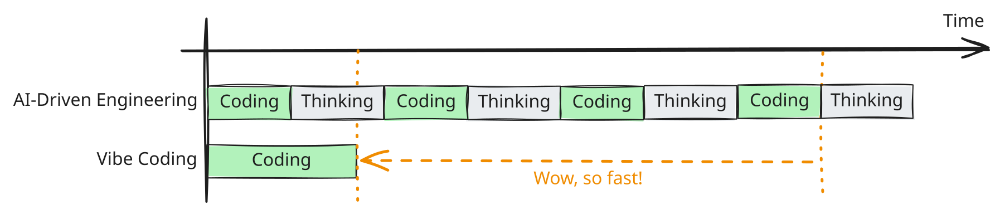
Developing Your Taste for Well Constructed Code
- Want code that:
- Works.
- Is robust.
- Is easy to understand.
- Is easy to contribute to.
- Code smells: Structures in code that violate at least one of the items above.
Example: Bike Counter
Let’s return to the Cambridge bike counter data.
Import the data.
- Suppose we didn’t have the
Totalcolumn and wanted to create it by addingWestboundandEastbound.
Smelly Code
Smelly Code
Both are correct-ish:
Rows: 192
Columns: 10
$ DateTime <chr> "07/04/2019 12:00:00 AM", "07/04/2019 12:15:00 AM", "07/04/2…
$ Day <chr> "Thursday", "Thursday", "Thursday", "Thursday", "Thursday", …
$ Date <date> 2019-07-04, 2019-07-04, 2019-07-04, 2019-07-04, 2019-07-04,…
$ Time <time> 00:00:00, 00:15:00, 00:30:00, 00:45:00, 01:00:00, 01:15:00,…
$ Total <dbl> 2, 3, 2, 0, 3, 2, 1, 0, 0, 0, 0, 0, 1, 1, 0, 0, 0, 0, 1, 1, …
$ Westbound <dbl> 2, 3, 1, 0, 2, 2, 1, 0, 0, 0, 0, 0, 1, 1, 0, 0, 0, 0, 0, 1, …
$ Eastbound <dbl> 0, 0, 1, 0, 1, 0, 0, 0, 0, 0, 0, 0, 0, 0, 0, 0, 0, 0, 1, 0, …
$ Occasion <chr> "Fourth of July", "Fourth of July", "Fourth of July", "Fourt…
$ new_T <list> 2, 3, 2, 0, 3, 2, 1, 0, 0, 0, 0, 0, 1, 1, 0, 0, 0, 0, 1, 1,…
$ new_Total <dbl> 2, 3, 2, 0, 3, 2, 1, 0, 0, 0, 0, 0, 1, 1, 0, 0, 0, 0, 1, 1, …But why is the lefthand code smelly?
Developing Your Taste for Well Constructed Outputs
- Want outputs that are:
- Accurate.
- Clear.
- Unique.
- Provide context.
- Let’s look at some of the final graphs from last class and ask:
- Which graph do you prefer?
- How could the graphs be improved?
- Which graph do you prefer?
Example: Birth Patterns in the US
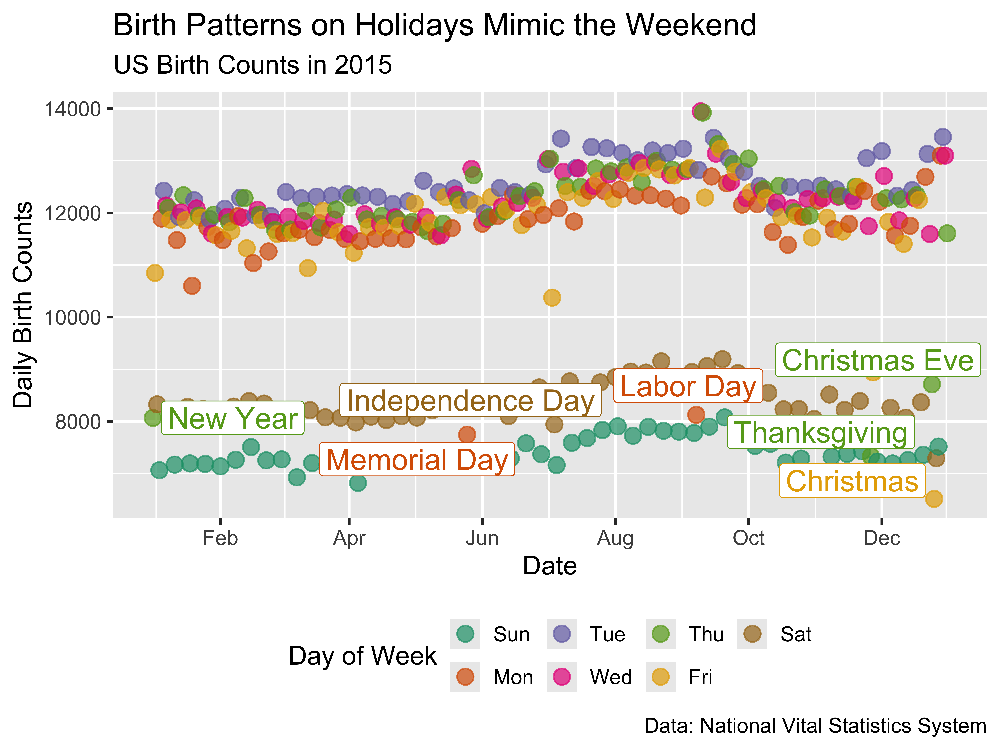
Example: Birth Patterns in the US
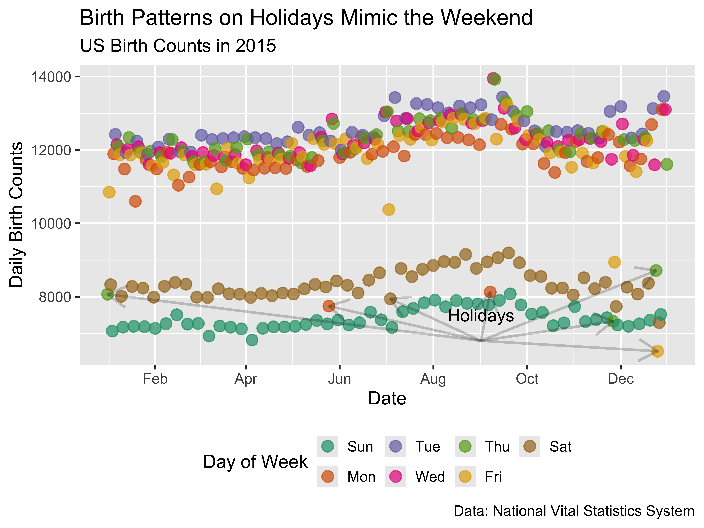
Example: Birth Patterns in the US
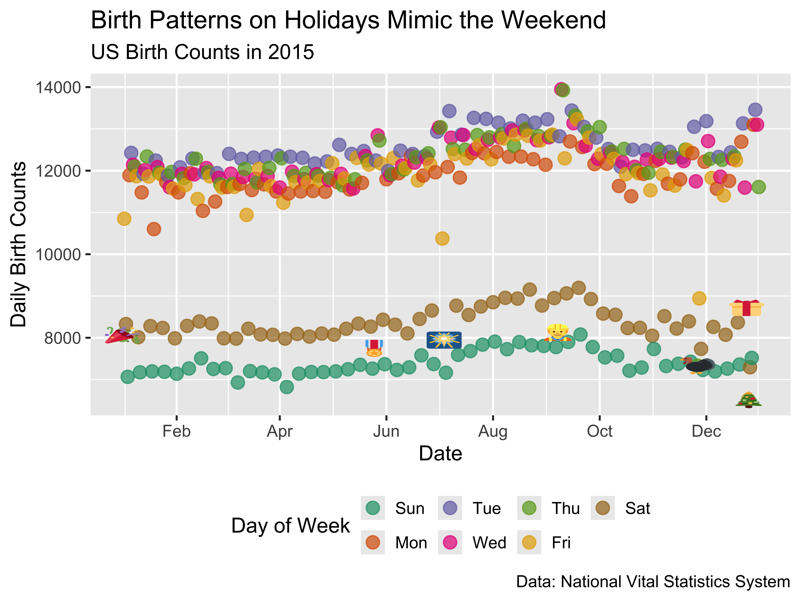
Learn from Experts & AI
Jenny Bryan is a rock star coder. Reading her materials and watching her presentations has made me a better coder.
Jenny’s observation:
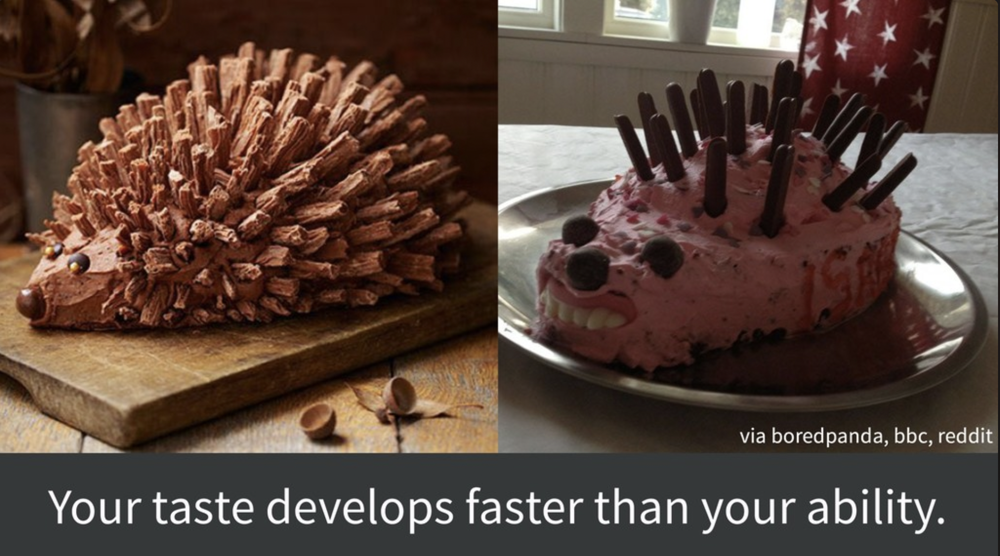
- But AI can help speed up your ability by helping you learn new code.
- As long as you keep developing your own taste.
Suggestions for Developing Taste while Vibe Coding
- Know what you want.
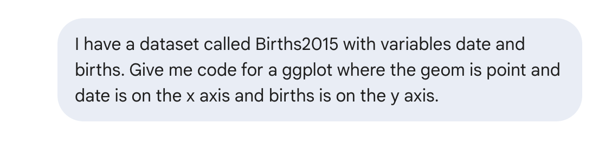
- And then iterate.
Suggestions for Developing Taste while Vibe Coding
- Be curious.
- Saw lots of great curiosity on Monday!
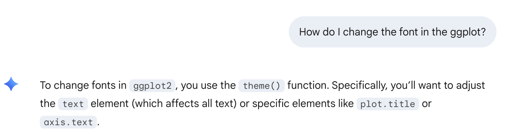
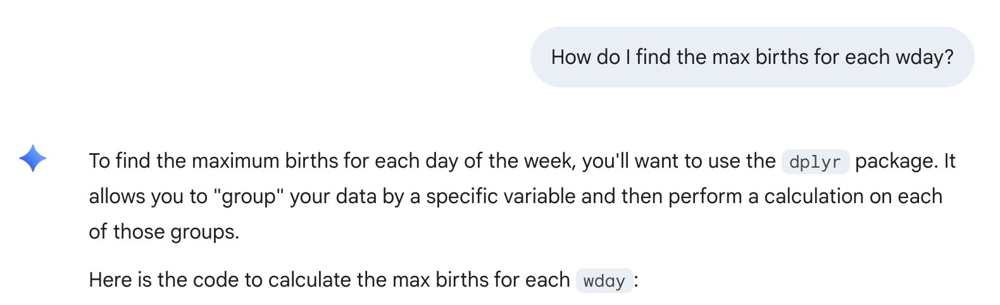
Suggestions for Developing Taste while Vibe Coding
- Keep code concise and consistent.
- Ex: Don’t load packages at the start of every chunk!
Suggestions for Developing Taste while Vibe Coding
Don’t over-comment your code.
# Create the plot with a qualitative ColorBrewer palette
ggplot(data = Births2015, aes(x = date, y = births, color = wday)) +
geom_point(alpha = 0.8, size = 1.5) + # Added alpha and size for better visibility
scale_color_brewer(palette = "Dark2") + # Applies the distinct qualitative palette
theme(
legend.position = "bottom", # Moves legend to bottom for a wider plot area
plot.title = element_text(face = "bold") # Bolds the title for a cleaner look
)Suggestions for Developing Taste while Vibe Coding
Be unique and don’t settle for the defaults.
Suggestions for Developing Taste while Vibe Coding
Avoid the illusion of context.
Let’s learn something new: Maps in R!
Spatial Data
Data that is linked to the physical world.
Visualizing these data on a map (or map-like graph) is a great way to add useful context!
Focus on choropleth maps and raster maps.
Static, Raster Maps
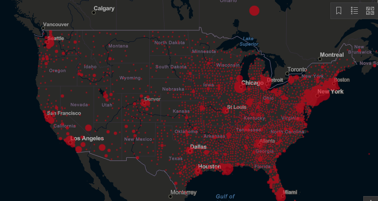
Source: JHU
Choropleth Maps
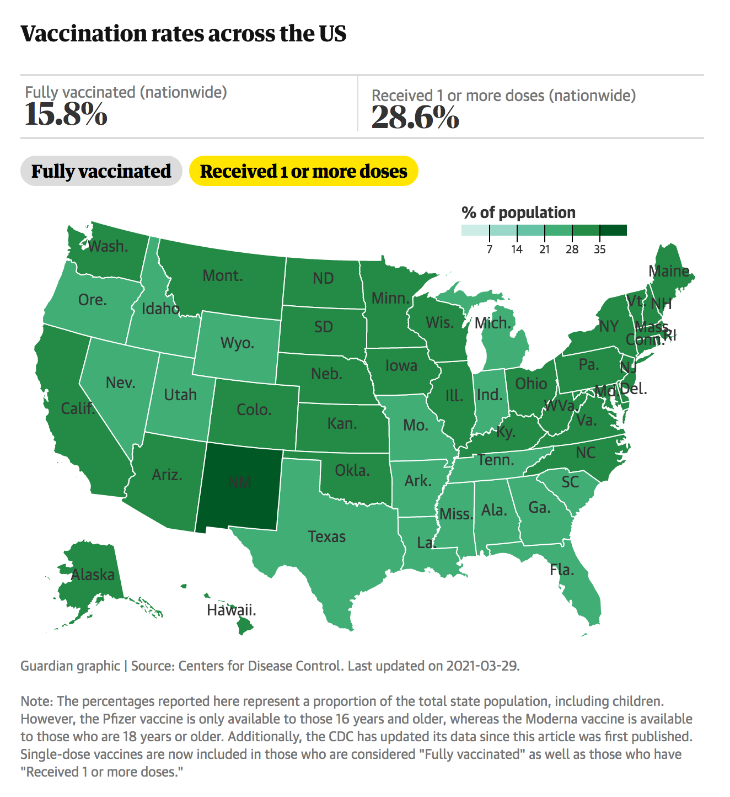
Source: The Guardian
Interactive Maps
Can be choropleth or raster maps!
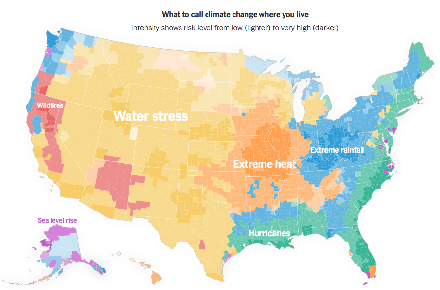
Source: NYTimes
Spatial Data Structures
- Often stored in special data structures
- Ex: Shapefile(s)
- Consist of geometric objects like points, lines, and polygons
- Visualizing Spatial Data
- Need to draw the map
- Add metadata on top of the map
- Color in regions
- Dots